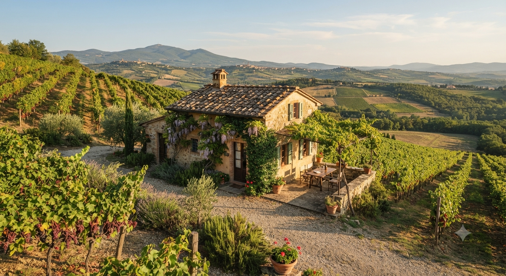
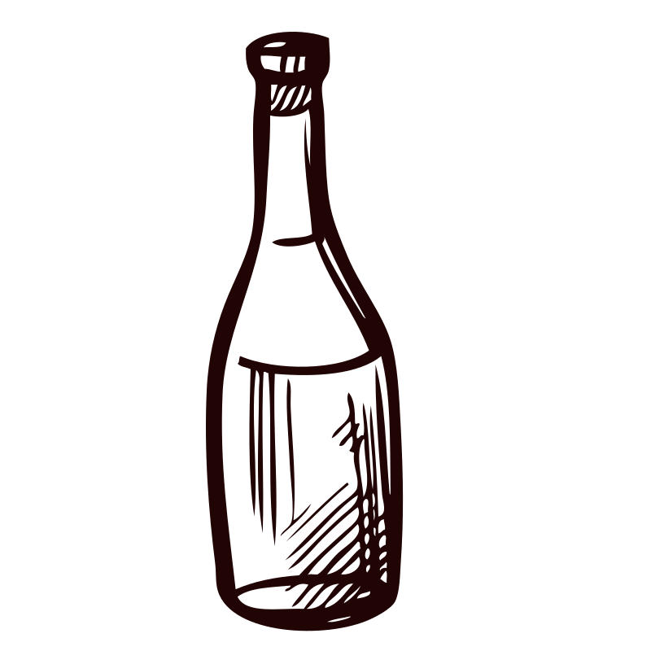

Ambrosia Country House
A Mediterranean Country Experience.
An agricultural laboratory where visitors reconnect with nature, learn traditional skills, and experience authentic Sicilian rural life.
Discover Ambrosia
Ambrosia Country House
An agricultural laboratory where visitors reconnect with nature, learn traditional skills, and experience authentic Sicilian rural life.
Discover Ambrosia
Main Experiences
Ambrosia Country House is designed as a place where visitors reconnect with nature, learn traditional skills, and experience authentic Sicilian rural life through active, memorable moments.
The objective is simple: to create experiences people will remember for the rest of their lives.
Outdoor dining, private events, corporate team building, and wellness in nature.
Divino introduces visitors to Sicily. Ambrosia allows them to live it.
Discover Divino, book a wine tasting, learn about Ambrosia, and return for another experience.
Every experience naturally leads to the next, building a lasting relationship with Sicily.

Ambrosia Product Collection
Wherever possible, products should be made using ingredients grown on our farm or sourced from carefully selected local producers.

Experiences Become Products
After visiting the lavender fields they purchase lavender soap.
After attending a cooking class they buy the pesto they prepared.
After harvesting olives they purchase the new season olive oil.
After collecting herbs they take home herbal teas or natural cosmetics.

Our Philosophy
The Ambrosia brand should become synonymous with Mediterranean culture, sustainability, craftsmanship, authentic Sicily, and premium quality.